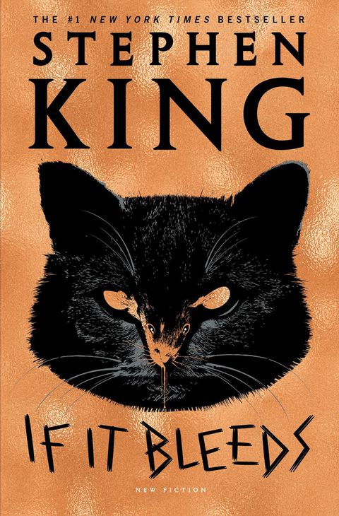

If It Bleeds
If It Bleeds is a collection of four previously unpublished novellas by American writer Stephen King. The stories in the collection are titled "Mr. Harrigan's Phone", "The Life of Chuck", "If It Bleeds", and "Rat".
It was released on April 28, 2020.
Craig gets a job working for the retired Mr. Harrigan, who gifts Craig a winning lottery ticket.
Craig then buys Mr. Harrigan a cell phone using some of the money won from the lottery ticket. Eventually, Mr. Harrigan dies and later, Craig leaves a voicemail on Mr. Harrigan's old phone about a bully. The bully is later found to have died by suicide. Craig then decides not to use the phone with Mr. Harrigan's number and switches to a newer model. Later, after the drunk driver responsible for a loved teacher's death receives a light sentence, Craig calls Mr. Harrigan's phone and leaves a voicemail about the drunk driver using his old phone. The drunk driver is then found to have died by suicide; following this, Craig throws his old phone into a lake.